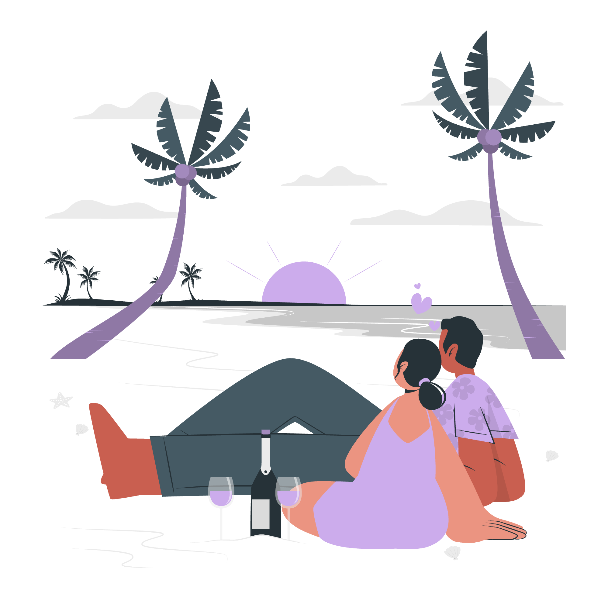

Diplomat (INFJ • INFP • ENFJ • ENFP)
Dreamy • Emotional • Romantic • Meaningful travel
Diplomats don’t just visit places — they feel them. Every journey is emotional, personal, and deeply connected to atmosphere, people, and nature. They are drawn to soft landscapes, romantic views, and peaceful experiences that stay in memory.
- love peaceful and emotional places
- enjoy aesthetic and romantic views
- prefer meaningful experiences over busy travel
- nature, sunsets, and quiet moments
- travel for feelings, not just locations